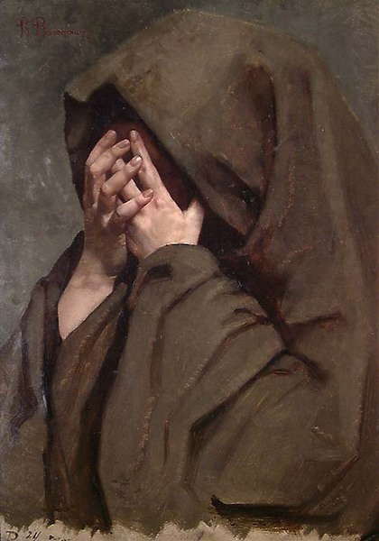
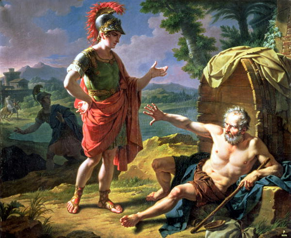
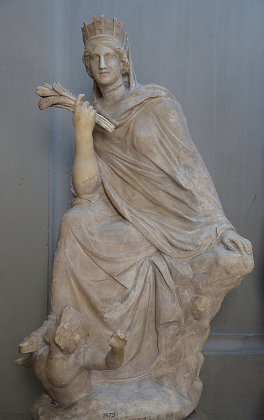
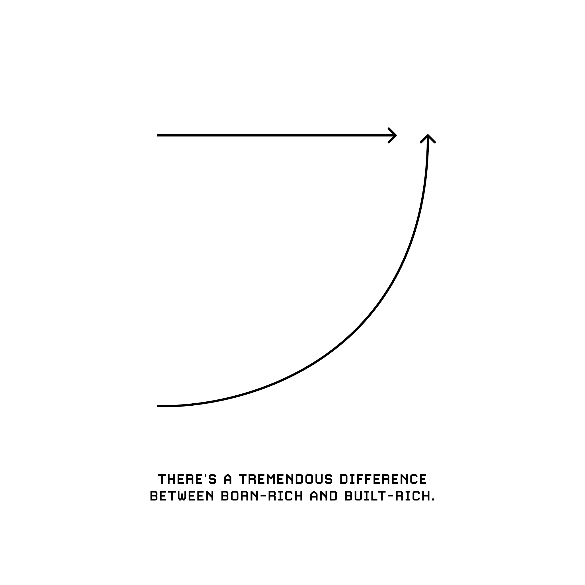
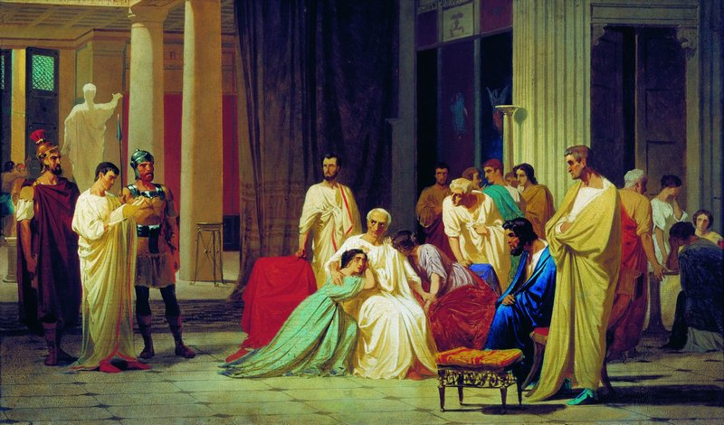

Dichotomy of Control for Freedom
“Men are disturbed not by things, but by the views which they take of things.”
~ Epictetus
Epictetus taught that philosophy is a way of life and not simply a theoretical discipline. To him, all external events are beyond our control. He argues that we should accept whatever happens calmly and dispassionately. However, individuals are responsible for their own actions, which they can examine and control through rigorous self-discipline. Freedom demands not just arms, but discipline. For life is a battle—and one must choose to meet it equipped, or yield without resistance. If you want to arrive at ataraxia—tranquility of the mind, freedom from pain and fear, by first tending to apatheia—a state of mind free from emotional disturbance, freedom from all passions, then you must contemplate and understand our dichotomy of control: ‘Ta eph’hemin, ta ouk eph’hemin:’ What is up to us, what is not up to us.
Keep the reserve clause in mind. It serves as a reminder to withhold judgment about externals, as they are often beyond our control. Adding a mental caveat, such as ‘if it is according to nature’ or ‘insofar as it depends on me,’ helps maintain this perspective. With fate permitting, reserve actions and plans with the possibility of not being realized or accomplished, for things occur unplanned. Be reminded to keep your will aligned with Nature. Do not hearken to an idealized vision since it can be impeded if it is not within prohairesis or your choice. Do not combat obnoxiousness with obnoxiousness for it compromises integrity and virtue. You can never get even without compromising virtue. Arguing with a fool wins you nothing—it only proves there are two.
Instead, meet insults with humor. Don’t waste energy defending yourself against slander—answer lightly: “Yes, and he doesn’t even know the half of it; he could have said much more.” In doing so, you disarm the attacker. Remember, an insult only has power if you grant it that power. Words hurt not because of the speaker’s intent, but because the listener chooses to take offense. If you are offended, you’ve become a complicit partner in your own injury. Hold fast to your agency and never let it be dictated by others.
Reflect, don’t reflex means that, when faced with an insult or criticism, instead of reacting automatically or impulsively, take a moment to pause and think about the situation. By reflecting, you maintain control over your response, rather than allowing others to dictate your emotions or actions. Develop endurance. There is a distinction between criticism and insult. Nevertheless, value the teaching moment. Imagination was given to man as a compensation for what he lacks, while a sense of humor was provided to console him for what he is.
Outcomes CANNOT be controlled, only merely influenced. Passivity is not the idea, but rather the wisdom of knowing that fate can yield us to unwanted outcomes. Don’t disguise your inaction or personal solitude as a well-developed moral character that is simply too far beyond the trappings of the world. That doesn’t make your character better; it just makes you a coward. Cowardice arises when detachment becomes an excuse for avoiding engagement with life’s uncertainties, mistaking surrender for serenity. To avoid this, act within the sphere of your influence with courage and clarity—accepting what you cannot control, but never refusing to shape what you can.
Examine your impressions which are initial reactions that ought to be rationally deliberated in accordance with Nature and the Providence.
- If such a thing is within your sphere of control, it concerns you.
- If such a thing is not within your sphere of control, it concerns you not.
Health is a preferred indifferent, something worth pursuing as long as it doesn’t compromise our integrity and virtue. Better to be a sick person with integrity than a healthy liar. Sickness is an impediment to the body, but not to the will unless the will wants to be impeded. Your body is a part of you, but by nature it is clay, subject to impediment and compulsion, a slave to everything that is stronger.
Will we choose to view our brother as a selfish jerk, or will we remember that we share the same mother, that his flaws are not intentional, that we love him, and that we, too, have our own weaknesses? Everything that irritates us about others can lead us to an understanding of ourselves. When irritated by someone’s shortcomings, pause to reflect on your own shortcomings. Doing this will help you become more empathetic to this individual’s faults and therefore become more tolerant of him.
Who is the truly invincible human being? Epictetus answers, “One who can be disconcerted by nothing that lies outside the sphere of choice.” Men will not look at things as they really are, but as they wish them to be—and are ruined. Do not unique-ify objects or you will be troubled. Do not invite this ruin and trouble. Choose self-mastery over self-slavery. Dependence is slavish and foolish. The true measure of a person can be seen in what provokes their anger; in other words, the size of what makes them mad reflects the size of their character. If little things make them mad, then it follows that they have little character.
Find freedom from subservience. No man is free if someone else has the power to obstruct and compel him. Even more so, do not be mistaken by slaves whose masters have vacated for but a brief period. Nature of these slaves’ sufferings shall soon be learned when their masters return. We have many masters in the form of circumstances. Use emotions as advisors, not masters. Rather than possessing roles of masters, give them roles of sparring partners. In this role, they can test your virtues, not seduce you from them. Our challenges are our teachers. Socrates said to pay attention to your enemies, for they are the first to discover your mistakes. It takes less character to point out the faults of others than to tolerate them. Incentives, commitments, recognition, and politics—these are all obstacles. Yet, when faced with the right mindset, challenges and limitations can transform into opportunities for beauty and excellence. Excellence, the true measure of rank in nature, lies in the ability to endure pain. Perhaps the greatest measure of a person’s character is their capacity for suffering. Suffering is a choice; pain is not.
Suffering often arises from certain inner hindrances. It is not our enemy, but a teacher guiding us. There are five that most obstruct self-mastery: the pull of sensual desire—am I addicted?; ill will and aversion—am I gripped by anger or resentment?; dullness and heaviness—am I succumbing to inertia?; restlessness—is my mind leaping from thought to thought?; and skeptical doubt—am I paralyzed by indecision? These are not enemies to be crushed but patterns to be understood. To meet them, remember the practice of RAIN: Recognize the hindrance as it arises. Accept it as part of your present condition. Investigate its cause and its hold upon you. And finally, Non-identify: remind yourself—I am not the body, I am not the mind, I am not my emotion. Thus, even hindrances can become teachers, guiding you toward mastery rather than enslaving you.
What we learn from history is that we don’t learn from history. It is a constant cycle. In fact, historians are fond of saying that the past doesn’t repeat itself; it rhymes. We need to understand the experience through the experience itself and all of the feelings with it to truly understand. To illustrate this example:
- When there are no recessions, people get confident.
- When they get confident they take risks.
- When they take risks, you get recessions.
- When markets never crash, valuations go up.
- When valuations go up, markets are prone to crash.
- When there’s a crisis, people get motivated.
- When they get motivated they frantically solve problems.
- When they solve problems crises tend to end.
Good times plant the seeds of destructive downfall through complacency and excess, and bad times plant the seeds of turnaround through opportunity and panic-driven problem-solving. If you recognize that bullshit is ubiquitous, then the question is not “How can I avoid all of it?” but rather, “What is the optimal amount to put up with in order to function effectively in a messy, imperfect world?” The practice is not to escape the world—but to sanctify it.
Cicero recounts a debate between Diogenes of Babylon—not the Cynic—and his student Antipater over the ethics of selling a piece of land or a shipment of grain. Diogenes argued that nothing would ever sell if every fact were disclosed; after all, how could a market function without the pursuit of mutual self-interest? In the same way, we must enter the political sphere to navigate and overcome its inherent obstructions. Engaging with politics—even with its compromises—is necessary to achieve the public good.
What experience and history teach us is this: people and governments have never truly learned from the past. In the same vein, taken facetiously: never get involved in a land war in Asia. The most common bad advice is: “You’re too young.” However, most of history was built by young people, and they just got credit when they were older. The only way to truly learn something is by doing it. Yes, listen to guidance. But don’t wait. Experience is overrated. When hiring, hire for aptitude then train for skills. Most really amazing or great things are done by people doing them for the first time. Then to make something good, just do it. To make something great, just re-do it, re-do it, re-do it. The secret to making fine things is in refining them.
To be or to do? Which way will you go? How will you measure your life? Let success not bear a false guise, for having authority is not the same as being authority. Strive not to be a man of success, but a man of integrity and worth. Don’t let success go to your head and don’t let failure go to your heart. A man is great because failure hasn’t stopped him. Failure comes with a thousand excuses. Success comes with none. Success is freedom. The closer you want to get to me, the better your values have to be. Utilize your will to matters confined to your own control. Civilization is the endless creation of unnecessary needs. Don’t get lost in the dizzying complexity designed to turn a quick profit from disillusioned or gullible consumers.
Meditate upon your concordance between memory and accompanying emotion. The self becomes fragmented once you deliberately disconnect these two elements. Dissolve the ego before circumstances inextricably schismatize memory from emotion. This disconnect contributes to mental ailments of perturbation, anxiety, depression, and a sense of decorporealization, where one feels detached from the embodied, lived experience of self. Neurosis includes mental disorders that involve chronic distress, but do not include delusions and hallucinations. Examples of neurosis include hysteria, impulse control disorder, obsessive-compulsive disorder, anxiety, and obsessive-compulsive personality disorder. Psychosis is a major disorder that is related to personality that is characterized by emotional and psychological disruptions. Examples of psychosis include schizophrenia, bipolar disorder, drug-induced episodes, etc.
Neurotics imagine sky castles, psychotics live in them, and psychiatrists collect the rent.
Deliberate disconnect between memory and accompanying emotion may serve as an immediate mental protection with planned healing in sight. However, I think it is only detrimental short-term protection. Consequently, I think disconnection squanders your sense of self. In effect, it restructures your life narrative; you let outside impressions strip you of your true nature. It’s not time alone that heals all wounds; it’s the time your brain spends in REM sleep and dreaming that helps you emotionally recover by reprocessing painful memories in a calmer, safer neurochemical state. Instead of asking people how they are doing, ask them how they are sleeping; you will learn more. The easiest thing to be in the world is yourself. The hardest thing to be is what others expect you to be. Don’t let them place you in that role. Know that you don’t have to do, be, or say anything. That’s the beauty of life—you get to make that part up. If you ever feel that you’ve been bogged down in other people’s wants, other people’s desires, and other peoples plans for your life then join the club. It’s a common story, one that’s already been written. Most people simply fall into this trope, letting external expectations shape their personal narrative. But remember death and remember that there’s no better time to free yourself than now. You won’t become free immediately, but maybe you can unshackle yourself one chain at a time. What are some invisible shackles that you are failing to question? There are reasons, whether understood or not, that we are supposed to experience these memories and emotions together in the moment. As consolation, neuroscience informs us that our emotions dampen over time. As a result, we only ever map our present emotions over our memories. By protecting ourselves from these memories and emotions through depriving or desensitizing ourselves from their natural experience, it changes us from who we are to who we want to be. Is who we want to be deceiving our true nature? Alternatively, are who we are and who we want to be collinear?

Ragnhild Beichmann, En nonne, 1878. Oil on canvas.
Balancing self-awareness of our neural patterns with active engagement in them is crucial for healing. Balance repose and action. There is a difference between contemplating something bad happening and worrying about it. Contemplation is an intellectual exercise. Conduct such exercises without affecting your emotions. Repetitive thoughts, like worry, prevent space for new ideas. Contemplation is intellectual, rumination is not. A helpful technique I’ve found is to separate your emotions from reality by prefacing your feelings with “I think” or “I feel.” For example, instead of saying, “It’s a horrible day,” try saying, “I think it’s a horrible day.” This subtle shift reframes the issue—not as the day itself, but as your interpretation of it. And, of course, adjusting your perception is far more achievable than trying to change the world around you.
Those who embrace their education with diligence will achieve freedom from emotional distress, finding tranquility, fearlessness, and liberation. Enlightenment resides in the quiet space between your thoughts. It’s not what we think but what happens in between thoughts that brings us peace. Unfortunately, one thing that we’ve been taught to unlearn is creativity since non-creative behavior is learned. We are all driven by delusions and self-generated hallucinations, but the one who can reflect on and analyze them is called a philosopher. Be a philosopher, but never forget to remain human. The ability to express what others can only think is what makes a person a poet or a sage; and the courage to say what others only dare to think is what makes them martyrs, reformers, or both.
The brain is a garden we cultivate. Enrich your soil. We can choose to tend to the seeds and circuitry of happiness and likewise choose to neglect the nourishment of pride, greed, lust, envy, gluttony, wrath, and sloth. Naturally, we have emotions for 90 seconds—beyond that, the emotion(s) that you experience then begins to stem from your internal narrative. Only you have the power to will your emotions; you are mistaken to think otherwise. Prayers are valuable, along with mantras, in the sense that they are predetermined thought patterns that shift our chaotic thoughts to more peaceful thoughts. Whatever falls outside your prohairesis, or faculty of choice, cannot be judged as good or bad, since it belongs to the realm of externals. Prescribe your prohairesis to Nature and Providence. Stoics believe that they don’t control the world around them. They only control how they respond—and that they must always respond with the virtues of courage, justice, wisdom, and temperance.
Aristotle was a student of Plato (and hence a grandstudent of Socrates). Aristotle’s philosophy was very practical but somewhat elitist. In his version of virtue ethics, a eudaimonic life is made possible by the pursuit of virtue, but we also need many other things over which we have no control (like wealth, health, social status, natural talents, abilities, and good fortune). In the end, Aristotle’s ideal life is indeed virtuous, but also privileged—dependent on the blessings of circumstance that lie beyond our control in the realm of externals. Not everyone agreed with this entitled life.
Where Aristotle saw the good life as virtue entwined with fortune’s favor, others sought to sever the tie. Where Aristotle saw fulfillment in fortune, others saw chains. For Aristotle, virtue thrived in favorable soil; for others, it needed none. The Cynics, and later the Stoics, pursued virtue stripped of fortune’s favor. Dependence on external goods would later be challenged by philosophers who sought freedom from fortune altogether. History offers a vivid scene where philosophy and power collided—a story both apocryphal and plausible: a timeless encounter in Corinth beneath the Grecian sun, when Alexander the Great stood before Diogenes of Sinope in a legendary exchange. What happens when virtue refuses to depend on luck at all? The ancient meeting offers an unforgettable answer.
* * *
There is a story that recounts the encounter between two contrasting figures: Alexander the Great, the powerful Macedonian conqueror, and Diogenes of Sinope, the famous Cynic philosopher known for his ascetic lifestyle and rejection of material wealth. Alexander, curious about Diogenes’ renowned wisdom, approaches him, offering to grant any request. Any request, of course, implied the full range of earthly power—wealth, titles, protection, even entire cities, whatever the king could bestow. But the whole material spectrum was what Diogenes had already renounced. For instance, Diogenes had long carried a humble cup for drinking water, until he watched a child drink from his cupped bare hands. Chastened by the boy’s simplicity and ashamed of his own foolishness for overlooking it, Diogenes hurled the cup away, exclaiming that the boy had outdone him in simplicity and declaring that even this was more than he needed.
So then, Diogenes, unimpressed by Alexander’s grandeur, famously responds, “Stand out of my sunlight,” implying that Alexander’s presence is blocking his view of the sun. This retort underscores Diogenes’ commitment to his philosophical principles and his rejection of worldly power and fame. Alexander was astonished by Diogenes’ indifference to fortune and his fearless commitment to simplicity. As he and his companions walked away, Alexander turned to them and confessed: “If I were not Alexander, I would wish to be Diogenes.” Still within earshot, Diogenes replied with a wry smile: “If I were not Diogenes, I too would wish to be Diogenes!”

Nicolas-André Monsiau, Alexander and Diogenes, 1819. Oil on canvas.
Overall, Monsiau’s painting captures the timeless theme of the clash between worldly ambition and philosophical enlightenment, inviting viewers to contemplate the nature of true wisdom and the pursuit of a meaningful life.
You’re not going to be happy by accumulating possessions but by relinquishing desires.
If you read the biography of any famous person, you’ll often find that they never truly sought fame. Ambition should be focused on internals, not externals. A Stoic’s greatest, most impressive triumph, Epictetus said, is not over other people or enemy armies but over oneself—over our limitations, our tempers, our egos, our petty desires. Tribulation is the way to triumph. We all have these impulses; What sets us apart is if we rise above them. A man without ambition is as good as dead. A man with ambition but no love is equally lifeless. But a man with both ambition and a deep appreciation for the blessings he has on earth is truly alive. Ambition involves desires for future circumstances that you deem worth pursuing and dreaming about. In an intelligent person, routine is a sign of ambition.
Ego is the false self we build from external validation—titles, praise, achievements; the roles we play—job, family, status; the desire for control and separation—‘I am this, I am not that’; and the fear of insignificance. Pride is the emotional fuel that feeds this ego: it magnifies insecurity, drives defensiveness, isolates us, and poisons relationships. Unchecked ego derails ambition, clouds our perception of reality, and stunts personal growth, while pride warps our choices, poisons our emotions, and fractures our relationships. Pride inflates ego, and ego amplifies pride, creating a self-perpetuating loop of defensiveness, obsession with status, and resistance to change. True selfhood, by contrast, is not defined by ego or pride. It is a living resonance with the world—a sense of being rooted in authenticity, essence, and how we conduct ourselves. Ego clings to a name to possess, pride inflates it to defend, and the spirit honors a name to belong
Projected outcomes are just opportunities until we attach adjectives to them. Adjectives create expectations, shaping our emotions around an uncertain outcome, which can lead to unnecessary stress or disappointment. Learn to desire each thing as it happens.
Desire is a contract you make with yourself to be unhappy until you get what you want.
It’s one thing to get what you want, but it’s another thing to want what’s actually worth getting. Ultimately, it is the desire, not the desired, that we love. Freedom is nothing conflicting with choice and no one able to obstruct you. Seek freedom from emotional distress. Epictetus taught that maintaining a high value on externals like wealth or fame is slavish because those people will be slaves to those who have the power to grant or withdraw them. Freedom is the realization that the embellishments of life are meaningless and not worth compromising freedom. Our own volition, prohairesis, frees us.
You have the freedom to assent without impediment. Nobody can make you assent to something untrue. In the domain of assent, you are unimpeded and unconstrained. Motivation, repulsion, desire, compulsion, and impressions conflict with the will. Are you being influenced or infected with desire? There is no such thing as spontaneous desire—it is vicarious. Mimetic desire occurs through excessive sensitivity to the desires of others and a competitive environment. We learn to value by imitating those around us. While in this trap, you fail to find meaning and enjoyment in your journey. Since people are mimetic, they tend not to follow ideologies but ideologues. You cannot be free from impediment if you desire things that are not your own. Seek freedom from subservience. Call those who comply to grievances, slaves. Do not be precarious. Understand that will compels will; you can choose not to do anything you hate.
Fortune
Tyche is the goddess of fortune, chance, and prosperity in Roman mythology. Tyche’s role highlights the capricious and unpredictable nature of fortune. She is neither entirely benevolent nor malevolent but rather indifferent to human affairs. Her actions are not governed by justice or morality but by chance and fate.

Unknown artist, Tyche of Antioch, 3rd century BCE. Bronze statue.
Attachment is the lead cause for life’s strife, suffering, and misfortune. Duḥkha literally means ‘unsatisfactoriness.’ We can better bear Duḥkha through preparation and exposure. Sukha literally means ‘comfort or ease.’ This is similar to the French term, blasé, where we become indifferent through repeated exposure. The Stoic practice of voluntary discomfort is similar to Buddhist asceticism. It helps prepare us for misfortune. Seneca has noted that to bear trials with a calm mind robs misfortune of its strength and burden. Creating something truly beautiful, one can transcend negativity and ridicule, using art not just as a form of self-expression but as a means of personal and spiritual redemption.
Is life really suffering? Is it really? Ask yourself, “What pain and struggle do I want in life?” Choose your struggle: suffering is our response to inherent pain. Pain is inevitable. Suffering is a choice. Choose your struggles because choosing our problems make them much more bearable as opposed to when they are not chosen by us. Man suffers only because he takes seriously what the Gods made for fun. Love the struggle. The harder the conflict, the more glorious the triumph. You didn’t walk through all that fire just to smell the smoke. Yesterday’s home runs don’t win today’s games. Don’t think that you’ve hit a triple when you were born on third base. Strength does not come from winning, and your struggles develop your strengths. Are you victim or victor?

Inheritance is linear; effort is exponential. Handed money glides; earned money climbs.
Why work out? A well-built physique is not just a status symbol—it’s a testament to your dedication. No amount of money can buy it. You cannot borrow it, inherit it, or steal it. It cannot be maintained without relentless effort. It reflects discipline, self-respect, patience, work ethic, and passion.
Don’t think that money does everything or you are going to end up doing everything for money. Most of our suffering comes from avoidance. Most of the suffering from a cold shower is the tip-toeing your way in. Once you’re in, you’re in. It’s not suffering. It’s just cold. Your body saying it’s cold is different than your mind saying it’s cold. Acknowledge your body saying it’s cold. Look at it. Deal with it. Accept it. Don’t choose to mentally suffer over it. Taking a cold shower for two minutes isn’t going to kill you. For cold showers, the trick is to think of the cold sensations as ‘interesting’ rather than ‘cold.’ Manson’s Law of Avoidance asserts that the more something threatens your identity, the more you will avoid it.
If you base your self-worth on your ability to reason—clinging to the identity of a master debater—then admitting you’re wrong will feel like a personal blow, and you’ll avoid it at all costs, hindering your growth. Instead of defining yourself by your reasoning skills, define yourself by your openness to learning. Don’t tie your identity to your beliefs; tie it to your willingness to grow. In this way, admitting you’re wrong won’t feel like an attack, but rather an opportunity for progress. In a similar vein, when we tie our identity to an ideology, like antiracism, any challenge to it feels like a personal attack. Instead of seeing criticism as a threat, we should embrace it as an opportunity to learn and improve, just as we do with reasoning. This way, our identity is rooted in our willingness to grow, not in defending fixed beliefs. People who cannot communicate think everything is an argument; people who lack accountability think everything is an attack.
Do not bind your ego to your position, for when the position falters, the ego falls as well. Without ego, there is nothing to defend; with it, you risk shielding yourself from threats that exist only in perception. FEAR is an acronym for False Expectations Appearing Real; don’t let fear paralyze you because excuses are born out of fear. Confront your fear, and excuses vanish. Fear must never rule you. Face it head-on, through decisive action or by shifting your perspective. Fear is caution divorced from reason, and it is through engaging it that we grow. The courageous are intrigued by fear, for it reveals the path to strength. Don’t fear what will improve you: he has won without glory, who has won without peril.
Rewrite the problem if you don’t know what to do. Just do something instead of doing nothing. Who says you have to be qualified to start doing what you want? Revel in the uncomfortableness of novel situations. Do not choose to suffer from analysis paralysis. Too many choices and comparisons of outcomes causes the paradox of choice. If you cannot decide, the default answer should be “no” because modern society is full of options. Fredkin’s paradox states that the more similar two choices seem, the less the decision should matter, yet the harder it is to choose between them. As a result, we often spend the most time on the decisions that matter least. This is illustrated by Buridan’s ass, a mythical donkey that finds itself precisely equidistant from two identical bales of hay. The ass tries to make a rational decision as to whether to eat from the left bale or the right, but since there’s no rational reason to prefer either, the donkey wavers until it dies of hunger.
Blundering happens when you jump into a project without first figuring out the right way to approach it or fully understanding what you’re getting into. For me, the risk of knowing what you’re getting into is that it can turn into an overwhelming obstacle that stops you from even getting started. Are you living or being alive? You cannot play chess if you don’t move. Get out there: you cannot shoot a deer from the lodge. While a ship in harbor is safe, that’s not why ships are built. At some point you have to stop polishing your spectacles and look through them.
Stoicism and Buddhism share a similar perspective on attachment. Both teach that we should not cling to associations, connotations, labels, or impressions when engaging with the world. This attachment supersedes our will. We cannot presume beyond our will. Our will is only subjected by us. A steady and unhindered will is almighty within our scope of jurisdiction and will. Do not falter. Alan Watts’ “Backwards Law” observes that chasing happiness often leads to suffering, while embracing life’s difficulties can bring true contentment:
- The pursuit of positive experience is itself a negative experience.
- The acceptance of negative experience is itself a positive experience.
Hold beliefs that are only to be comprised by your own will. Do not desire for something you cannot choose for—i.e., something beyond your will. Inept control over temperament binds one to the shackles of slavery. If you are ruled by mind, you are king; if by body, a slave. We should treat the body rigorously so it’s not disobedient to the mind.
Deem the future as neither good nor bad. For it should be simply summarized as ‘when it so chooses.’ It is an event beyond our will. Let the universe run its will. Do not permit something uncontrollable to consume you with stress and worry. Do not devote time to impractical circumstances, as well as absolutist decisions. When the time arrives, if it so chooses, you shall be equipped with the wisdom that is true to your nature. What also causes harm and wreckage is an unsubstantiated prediction of the future. Your time is in the present moment. Avoid constantly looking to the past to predict the future, for doing so prevents you from fully living in the present. Live in which you currently belong until life is no more. For example, you have experienced only existence. At one point, you were non-existent and once more, you will return to non-existence. Do not contemplate this as a tragedy. This is a return. After all, why should you argue against Nature? For Nature knows best. Transactions always occur. There is perennial change. Your naïve ego resists, but this mere resistance will not yield any good. Know the difference between acceptance, passivity, and indifference:
- Acceptance: Act of assenting/receiving
- Passivity: State/condition of inactivity; not reacting visibly
- Indifference: Being good either way. It encompasses everything outside of an individual’s excellence of character/virtue
Upekkhā, in Buddhism, refers to equanimity or even-mindedness—remaining balanced in the face of pleasure and pain. This parallels the Stoic idea of indifference, where one remains emotionally steady and does not let external events dictate inner peace. Both teach that freedom and serenity come from focusing on what is within your control and accepting what is not. Those who are free of resentful thoughts surely find peace. Regret is a waste of emotional energy because the past is beyond our sphere of control; learn from the past.
No regrets, just lessons.
No worries, just acceptance.
No expectations, just gratitude.
The pain of rejection is better than the pain of regret. Understand the dangers of counterfactual reasoning, as it can lead to unnecessary regret and self-blame by focusing on what could have been rather than accepting and learning from what actually happened. Outcomes can only be influenced, not controlled. As Shakespeare put it, “The fault, dear Brutus, is not in our stars, But in ourselves…” This is a powerful reminder that we must take responsibility for our circumstances, rather than blaming fate or luck for the situations we find ourselves in. Embrace the light for it guides your path, yet endure the darkness, for it reveals the stars.
Chrysippus, a prominent Stoic philosopher, believed in living in harmony with nature and cultivating self-control. It’s not that he renounced all pleasures and wealth; rather, he was wary of craving or desiring anything. A wise man, he said, can make use of whatever life offers, yet he is never in want. In contrast, the fool, though he needs nothing, lacks the wisdom to use anything and is in want of everything. Be the user, but not the slave, of the gifts of fortune. Fools are always getting ready to start, yet never begin. A fool’s paradise is a wise man’s hell. You can fool too many of the people too much of the time. If you wish to avoid seeing a fool you must first break your mirror.
What impressions are we allowing reign over us so that we perceive others as fools? Are they simply mistaken or are we mistaken? The biggest risk in dealing with people who act annoying is that they will lure you into a hatred towards them, a hatred that is injurious to you. Therefore, you need to work to make sure men do not succeed in destroying your charitable feelings toward them. If you hate a person, then you’re defeated by them. Every person is an opportunity for kindness. As Gurwinder Bhogul observes, “People don’t mean to disappoint you; they only do so because they are apes cobbled together from random mutations and puppeteered by fickle primordial impulses, their politely smiling faces paper-thin masks desperately held tight against the screaming chaos beneath.”
Agrippinus was a Stoic philosopher known for his clarity of character and his belief that virtue alone guides us through difficult decisions, without need for hesitation or overthinking. He believed that only character determines how to handle difficult matters—and it does so clearly and decisively. Those who constantly weigh and calculate the value of external things come dangerously close to forgetting their own character. For Agrippinus, no calculation or deliberation was needed; the right course was obvious. There was no hesitation, no wavering, no cowering. He did not burden himself further by lamenting his troubles.
This same spirit of calm integrity and unflinching resolve is captured in Reading the Death Sentence to Thrasea Paetus (1867) by Fyodor Bronnikov. The work portrays the Stoic philosopher-senator receiving his condemnation with composure before his execution under Nero—an enduring image of moral steadfastness and Stoic virtue.

Fyodor Bronnikov, Reading the Death Sentence to Thrasea Paetus, 1867. Oil on canvas.
You are equipped with wisdom. The way is not in the sky. The way is in the heart. Don’t try to do something—simply do it. To try is to reinforce limitation through hesitation, doubt, and indecision. Never tell your friends your plans. Stop putting too much trust in them. Don’t let anyone know what you’re doing until it’s done. One day? Or day one? Get rid of the word ‘should’ from your vocabulary. Whenever the word ‘should’ creeps up in your mind, it’s guilt or social programming. Doing something because you ‘should’ basically means you don’t actually want to do it. It’s just making you miserable. Focus on what you have, not what you lack. Quit the ‘hoping’ mindset. There’s no hope—there’s only doing the work and getting the results.
More is lost by indecision than wrong decision. Indecision is the thief of opportunity. It will steal you blind. Be prepared for the moment without fear of failure. The trade-off is that people who do smart things are often the hardest to teach, because they need to ask questions; people who do dumb things, on the other hand, just follow instructions. Simply ask questions; put yourself in a position to learn. Before asking how to do something, ask yourself “who do I know that can possibly do this something?” Genuine tragedies in the world are not conflicts between right and wrong. They are conflicts between two rights. Dialectics offers a solution by recognizing that opposing perspectives can coexist and, through synthesis, lead to a deeper, more balanced resolution.
The hardest thing to learn in life is which bridge to cross and which bridge to burn. New beginnings are disguised as painful endings. All day long, we tell ourselves stories. These unspoken expectations are premeditated resentments. When someone is nasty, rude, hateful, or mean with you, pretend that they have a disease. That way, it makes it easier to have empathy toward them which can soften the conflict. All we can do is carry ourselves with integrity and try to refrain from doing anything that is deserving of disdain, and then gracefully accept whatever opinions that others form of us. Maria Popova reflects on how our perceptions shape reality and how misinterpretation erodes connection:
And so, sensemaking and storytelling creatures that we are, we move through the real world in a self-generated dream, responding not to reality but to the stories we tell ourselves about what is true—stories at best incomplete and at worst injuriously incorrect, stories about what we do and don’t deserve, stories the cost of which is connection, trust, love. This is why without clarity of interpretation and without candor—the vulnerability of it, the courage of it, the kindness of it—all relationships become a ricochet of unspoken resentments based mostly on misapprehended motives, and crumble… Part of why this is so challenging to the Western mind, with its individualistic ideal of self-reliance that too readily metastasizes into self-righteousness, is that we grow incredibly insecure at the prospect of being wrong and feel incredibly unmoored by the fact of having been wrong. In a culture conflating who we are with what we know and what we stand for, the Eastern contemplative conditions can be so salutary with their gentle, study practice of releasing the clutch of selfing and unclenching the fist of righteousness into an open palm of receptivity.